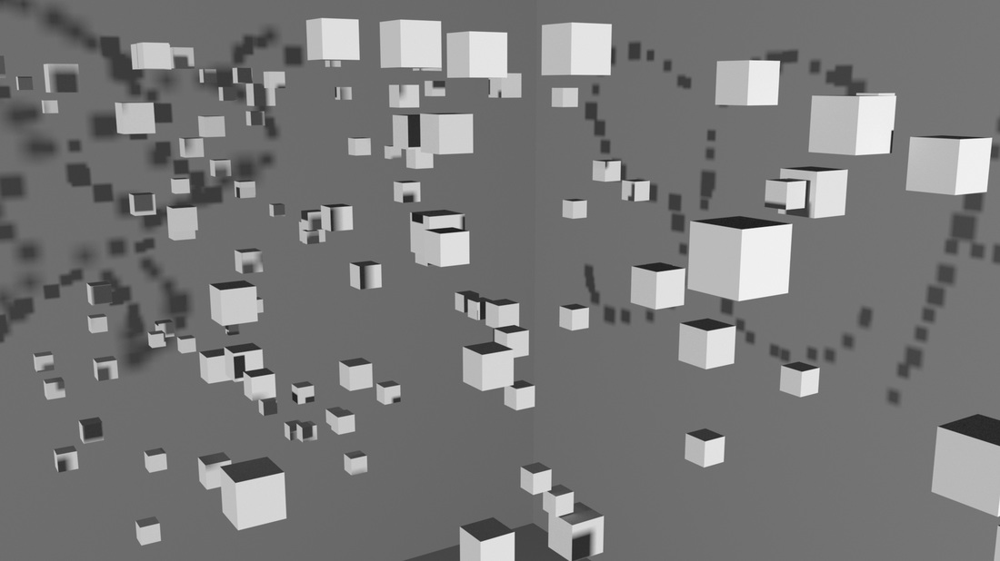
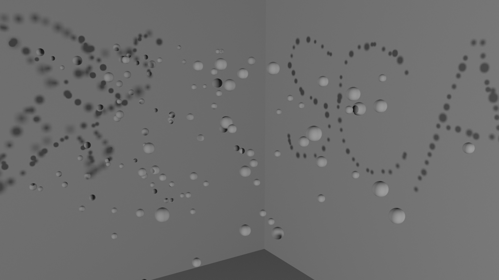
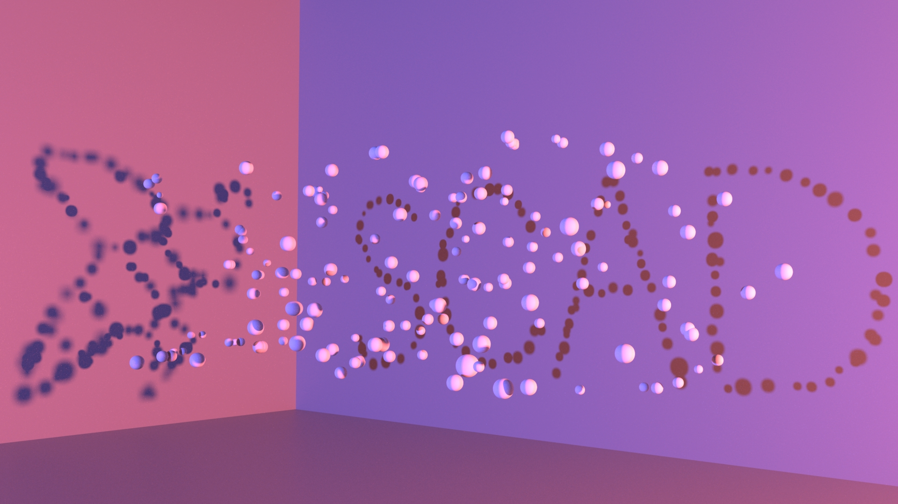
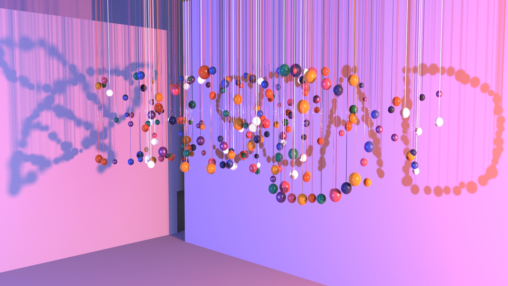

Spatial Discontinuity
A RenderMan-focused technical project exploring discontinuous spatial forms,
archive replacement, shading/rendering setup,
and presentation of procedural scene variations.
- RenderMan rendering and RIB/archive workflow
- Maya-based preliminary modeling and layout iteration
- MEL UI tooling for randomized RenderMan archive placement
{kind=link}
{kind=link}
{kind=link}
Reference Images
Visual references used to define the mood, spatial language, and material direction.
{kind=link}
{kind=link}
{kind=link}
{kind=link}
Preliminary Models
Early Maya studies used to explore object placement, form language,
and composition before final RenderMan rendering.
{kind=link}
{kind=link}
{kind=link}
RenderMan Rendering Techniques
Subdivision and RenderMan archive workflows were used to manage repeated objects
and final rendering setup.
{kind=link}
Before / After — Render Setup to Final Output
A self-contained before/after slider replaces the older external Widgetic embed.
Drag the handle to compare the workflow/setup image against the final render.


Before AfterRenderMan Archives UI Class
MEL scripts for replacing original objects with RenderMan archive instances
and controlling randomized archive placement.
{kind=link}
Loading randomArchivesRI.mel...
Tool Screenshots
{kind=link}
{kind=link}
Before / After — Tool Settings to Archive Result
The second native slider keeps the before/after section on the page without relying on the external Widgetic widget.


Before After